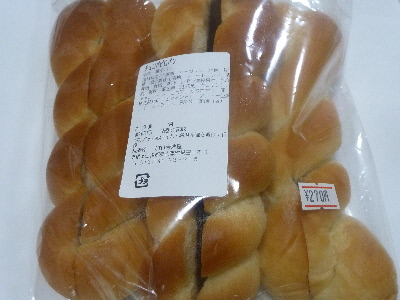

今津屋のチョコパヒロパン
2018/07/14
パピロパンって何？
チョコパンと何が違うんだろう。

パピロパンで検索したら、いろいろ出てきでよくわかりませんでした。
このパンは、ちょっと固めのパンにチョコクリームが挟んでありました。
ふんわりしたチョココロネとは違った食感でした。
味は似てるかな。
島根県仁多郡奥出雲町横田1175-6
2018/07/14
パピロパンって何？
チョコパンと何が違うんだろう。

パピロパンで検索したら、いろいろ出てきでよくわかりませんでした。
このパンは、ちょっと固めのパンにチョコクリームが挟んでありました。
ふんわりしたチョココロネとは違った食感でした。
味は似てるかな。